Phenotyping
Biostat 218
1 Introduction
In these lectures we will learn:
About RWE / RWD
What is a (clinical) phenotype
How to phenotype
2 What is real-world evidence?
Real-world evidence (RWE) is the clinical evidence regarding the usage and potential benefits or risks of a medical product derived from analysis of real-world data (RWD). RWE can be generated by different study designs or analyses, including, but not limited to, randomized trials, including large simple trials, pragmatic trials, and observational studies (prospective and/or retrospective). (FDA, 2020)

3 Types and sources of real-world data

4 Turning data into evidence
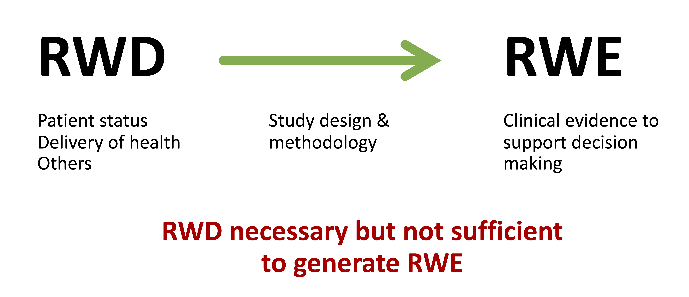
5 Typical questions to ask from RWD
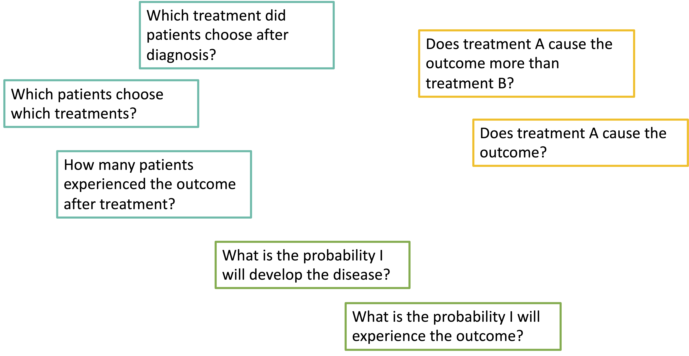
6 OHDSI standardization of use cases
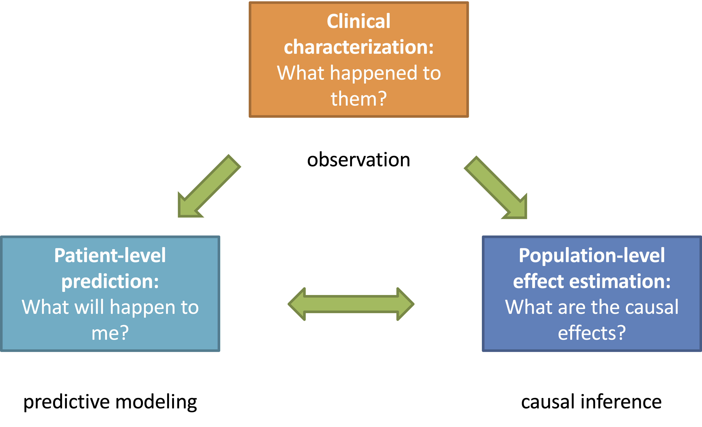
7 OHDSI standardization of questions
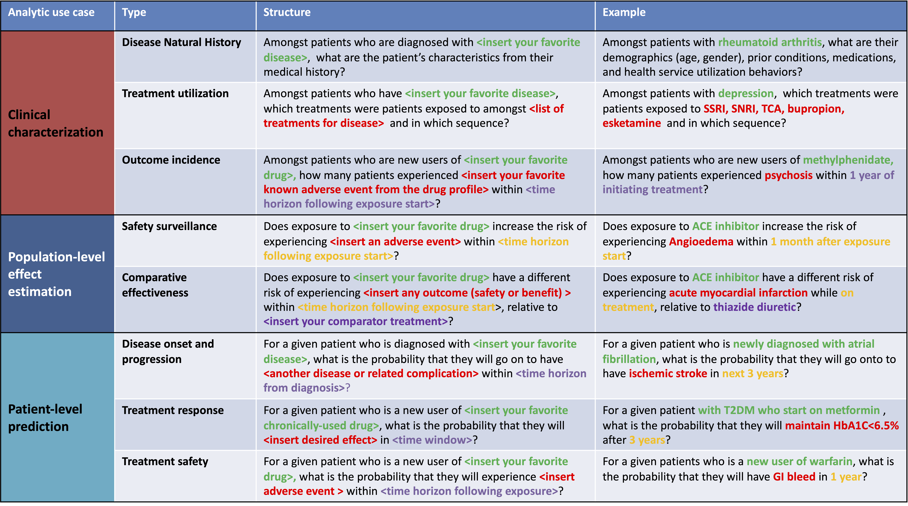
8 Evidence of interest – an example
- How many patients with bladder cancer experience venous thromboembolism within six months of treatment with cisplatin-based chemotherapy?
9 Evidence of interest – an example
- How many patients with bladder cancer experience venous thromboembolism within six months of treatment with cisplatin-based chemotherapy
These clinical features are called phenotypes
10 What is a phenotype?
From ancient Greek \(\phi \alpha \iota \nu \omega\) ‘to appear, show’ and \(\tau \upsilon \pi \omicron \sigma\) ‘mark, type’
First introduced in 1909 by Danish botanist and geneticist Wilhelm Johannsen to describe observable and measurable phenomena of organisms:
- “All ’types’ of organisms, distinguishable by direct inspection or only by finer methods of measuring or description […]”
11 Phenotypes in RWE

- A phenotype is a specification of an observable, potentially changing state of an organism (as distinguished from the genotype, derived from genetic markeup)
12 Quick summary
A phenotype is the clinical idea we want to study
The data are imperfect; the phenotype algorithm provides a proxy that attempts to represent the “phenotype” given the available data
Phenotyping is the process of transforming the data into clinical relevant features
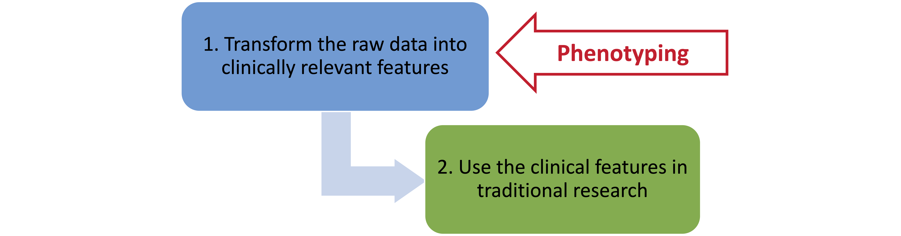
13 What are the primary purpose of RWD?
- Clinical care:
- Support diagnostics, treatment and monitoring of patients
- Document patient encounters and medical history
- Practice management:
- Manage appointments, resource allocation
- Enhance operational efficiency within healthcare facilities
- Billing and reimbursement:
- Facilitate billing and reimbursement for healthcare serives provided
- Ensure compliance with payer policies and healthcare regulations
- Healthcare utilization monitoring:
- Track usage of healthcare serives, procedures and medications
- Analyze patterns and trends in healthcare delivery for policy and decision-making
None of these are clinical research
14 RWD implications for clinical research
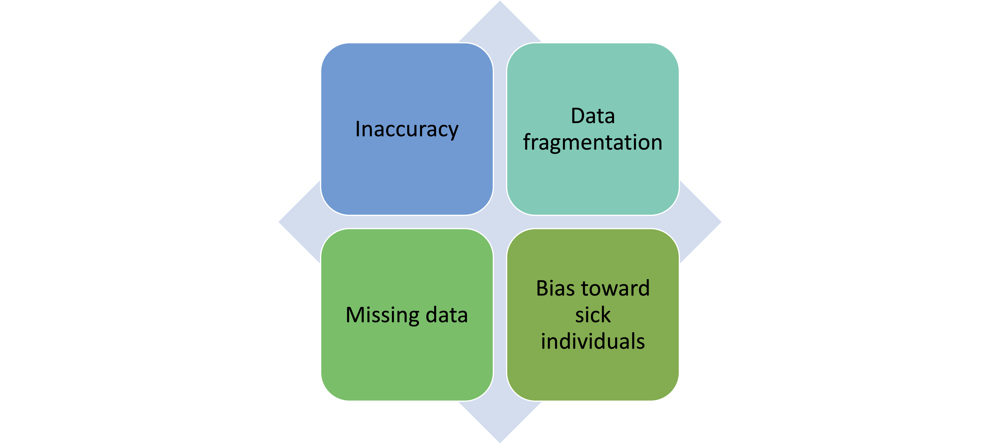
15 RWD implications for clinical research
- Inaccuracies introduced at any time during a clinical visit
- Errors occur anywhere in the process from observing the patients to recording them in the record, and billing requirements and liability avoidance influence recording
- Some errors may be at random; many errors – such as the influence of billing – are systematic
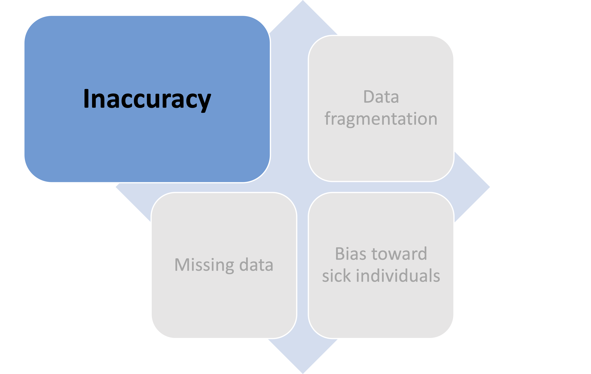
16 RWD implications for clinical research
- Data are occasionally missing by mistake
- Data are only recorded during healthcare episodes that usually correspond to illness
- Much information is implicit, under the assumption that the human reader will infer the missing information (pertinent negative findings)
- Missingness is not at random
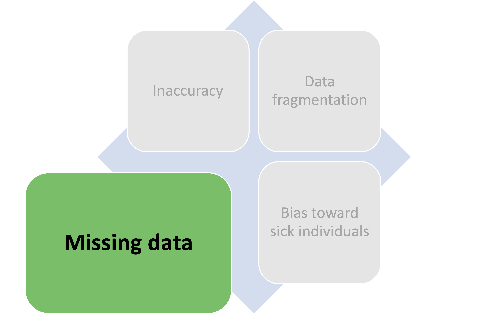
17 RWD implications for clinical research
- Patients move among institutions for their care and change insurance, so that individual databases contain only part of their experience
- Health information exchange is insufficiently pervasive to address this issue
- Variability in data entry formats, terminologies and coding systems can lead to inconsistencies and fragmentation
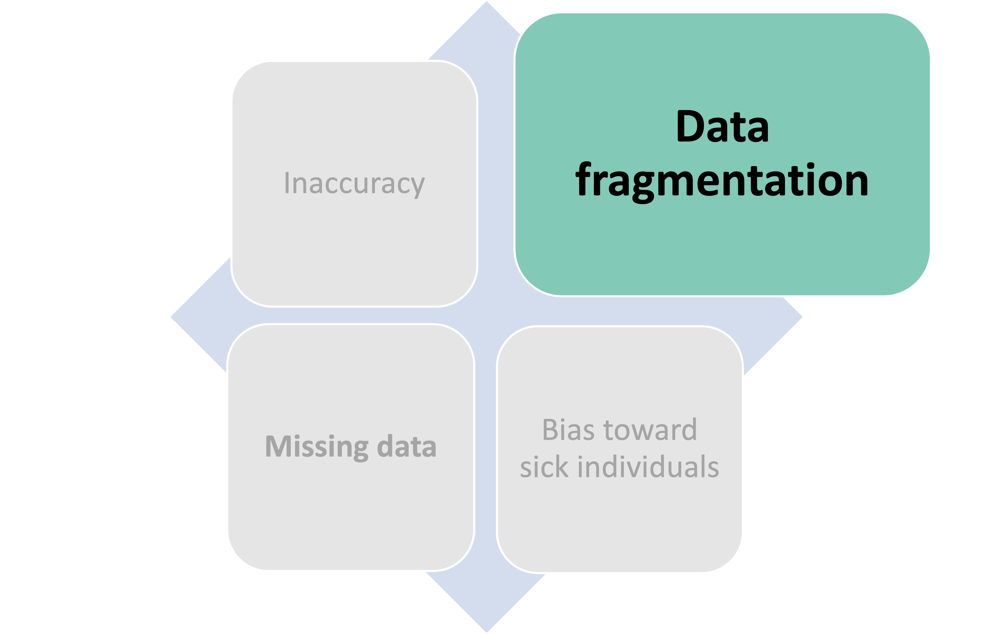
18 RWD implications for clinical research
- Differences in medical practice across geographies and settings, reporting patterns to payers and coding
- Data are biased towards sicker individuals
- Missingness and systematic errors can result in significant bias when RWD are used naively for clinical research
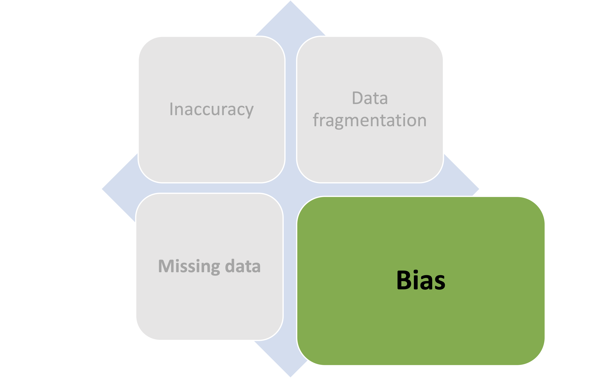
19 Why do we phenotype?
RWD are not perfect
Diagnosis, clinical testing and treatment data are generated for medical care purposes
They often represent an evolving understanding of the patient’s health status
They are incomplete (only a snapshot)
There are differences in medical practice across geography and healthcare settings, reporting patterns to payers and coding
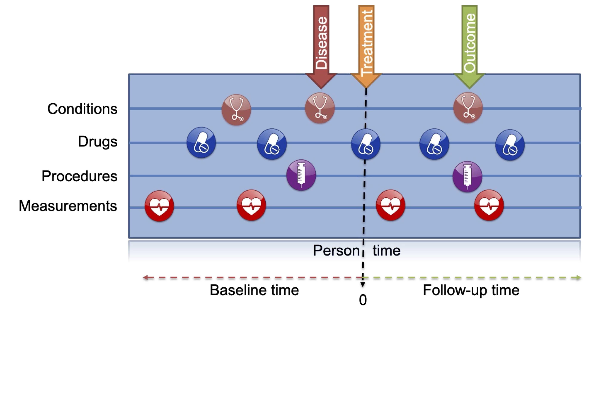
20 Phenotyping is challenging
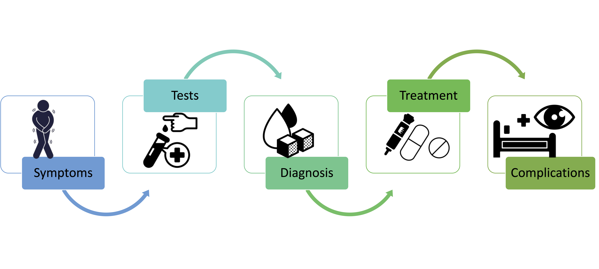
The data do not always contain exact what you want to study
The data have quality issues
The data are redundant and may contain information in multiple forms
We can use different data components to derive an optimal phenotype and evaluate its fitness for use
21 Criteria are like Lego bricks for phenotyping
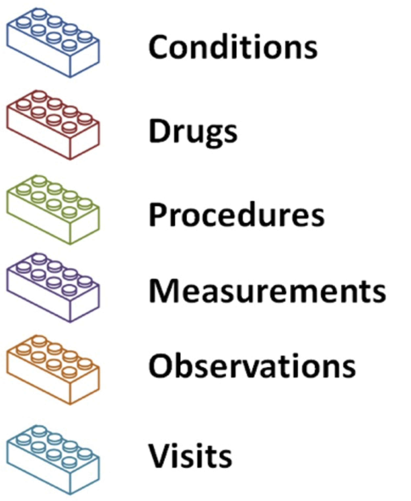
A criterion (Lego block) is a domain-specific data query and is a fundamental building block of a phenotype
Combining Lego bricks improves the phenotyping performance: matching the clinical idea meeting the optimization requirements
But remember that phenotypes are never perfect
22 What goes in a Lego brick? concept_set expressions
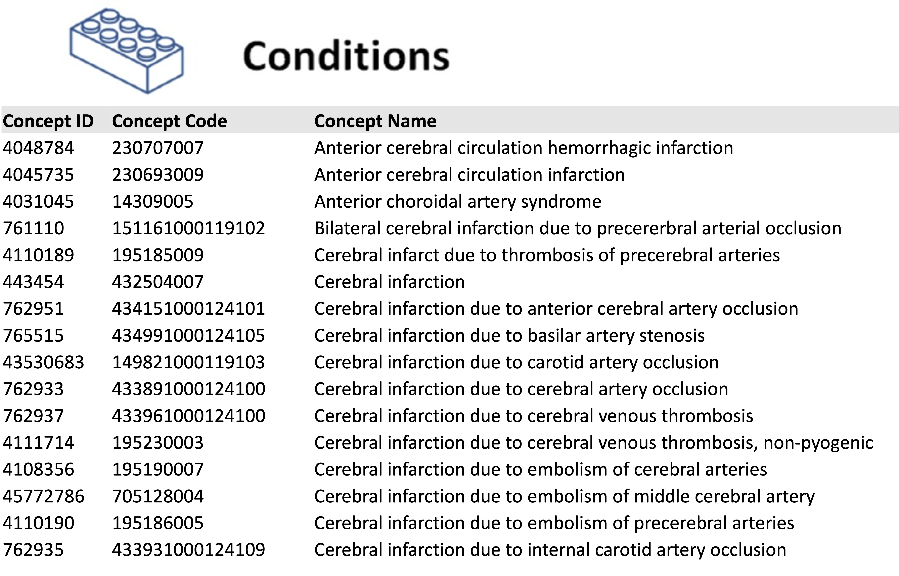
- Always with respect to some time-interval
- Use the vocabularies
23 concept_set expressions
- A
concept_setis a list of concepts in the OHDSI vocabularies- List of 1 or more concepts
- Optional operators for each concept in the list:
descendants: useconcept_ancestorto identify standard concepts which have descendant ancestral relationship with selected conceptexclude: remove concept (and optionally descendants) from listmapped: useconcept_relationshipto materialize non-standard concepts for all included concepts
- A
concept_setexpression can be materialized into a list of concepts using any instance of the OHDSI vocabularies
Possible example: 201826 in ATLAS
24 How do we use Lego bricks for phenotyping?

- Choice of Lego bricks and their combination-logic depends on the clinical idea and the optimization requirements of the phenotype under development
25 Optimization requirements
- Event/phenotype start date:
- The point in time the clinical event begins
- Essential for accurately tracking disease onset of treatment initiation
- Sensitivity:
- Ability of correctly identify true cases of the phenotype
- Important for minimizing false negatives
- Specificity:
- Ability of correcdtly exclude non-cases
- Important for identifying the target population
- Event/phenotype end date:
- The point in time when the clinical event ends
- Essential for understanding the duration of the condition or time-at-risk
26 From phenotype to cohort
- A cohort is a set of persons who satisfy one or more inclusion critieria (a phenotype) for a duration of time
- One person may belong to multiple cohorts
- One person may belong to the same cohort multiple different time periods
- One person may not belong to the same cohort multiple times during the same period of time
- One cohort may have zero or more members
- A
codesetis not a cohort- logic for how to use the codeset in a criterion is required
27 Phenotying steps
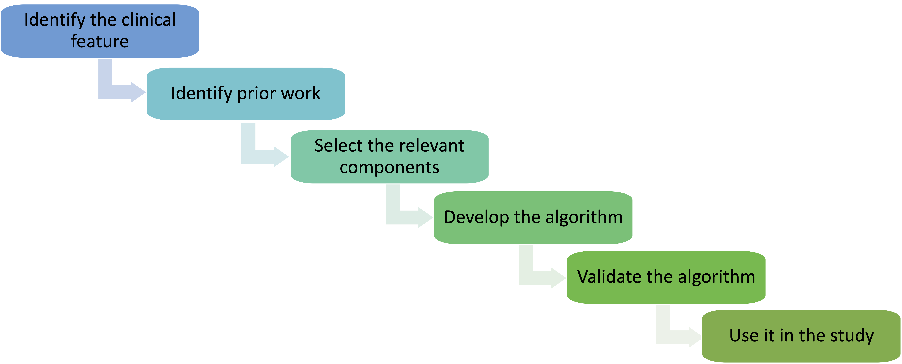
28 OHDSI engineering
Remember: phenotyping is just part of a process
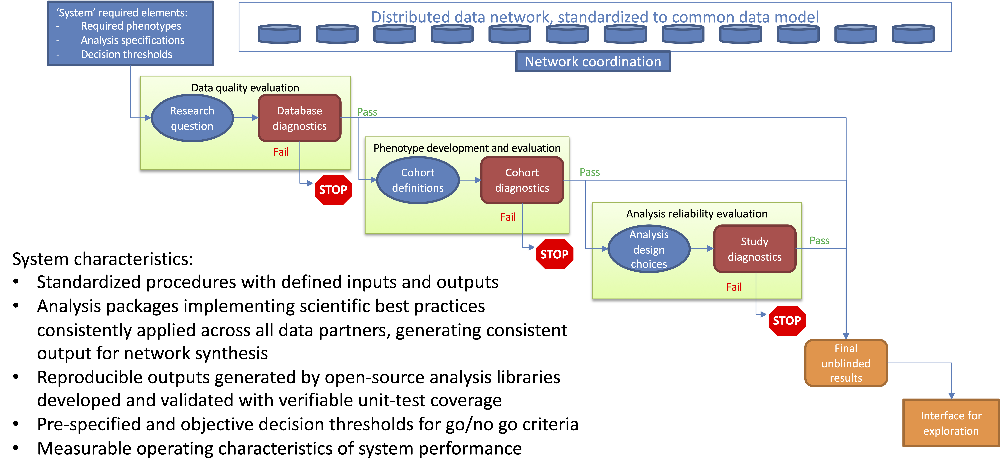
29 Standardized phenotying
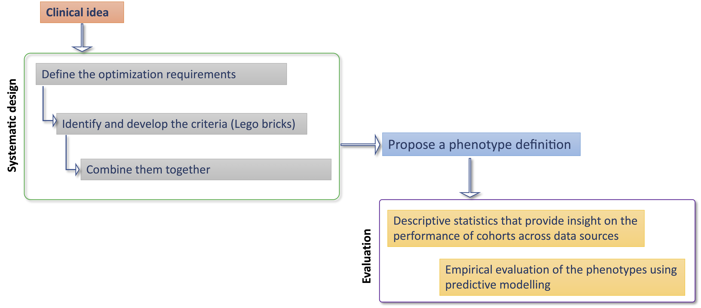
30 OHDSI tools to support phenotype development and evaluation
Phenotype development tools:
- ATLAS (concept set expressions, cohort definitions, patient profiles)
- CapR (programmable cohort definitions in
R)
Phenotype evaluation tools:
- CohortExplorer (review individual cases)
- CohortDiagnostics (population-level characterization to identify sensitivity / specificity errors and index date misspecification)
- PheValuator (train predictive models to directly estimate sensitivity and specificify)
31 OHDSI phenotype library
Good phenotyping is blend of art (practice) and science (evaluation)
Best to reuse standardized objects
32 Lack of reproducible phenotypes

33 Current state-of-art of phenotypes in publications
- Heterogeneous and all over the place, ranging from
- Nothing
- Reporting code lists
- \(\pm\) free text describing phenotyping approach
- \(\pm\) evaluation or validation results
- Rarely accompanied by analytic code use for reuse
34 Example: fully specified phenotype
Primary source:
Secondary source:
35 Standardized phenotypes and their cohorts

36 What we have – observational data for a single person
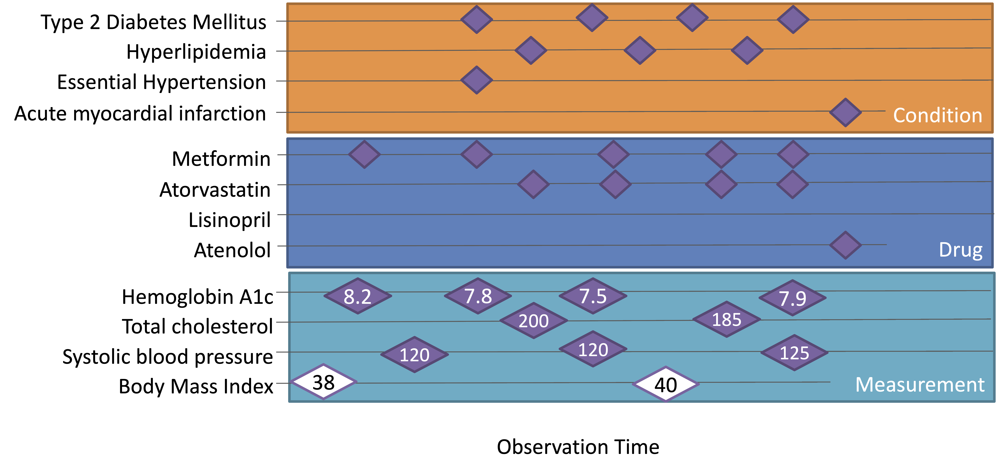
37 What we want – longitudinal health status for a single person
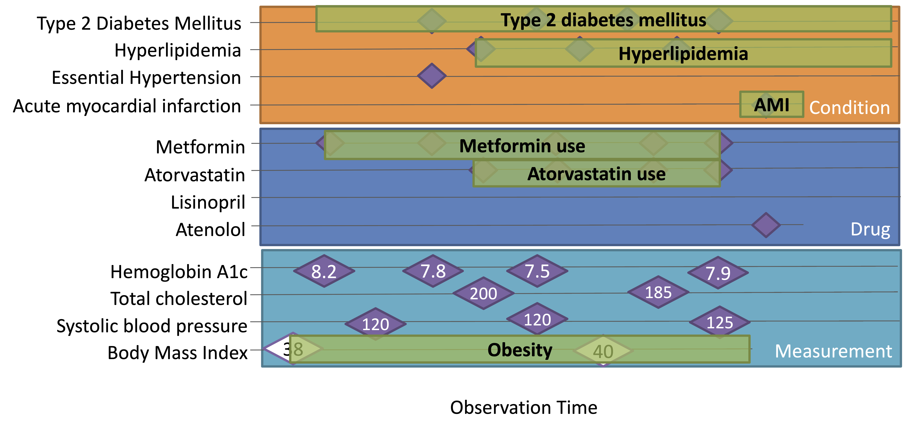
38 Errors from disease phenotyping
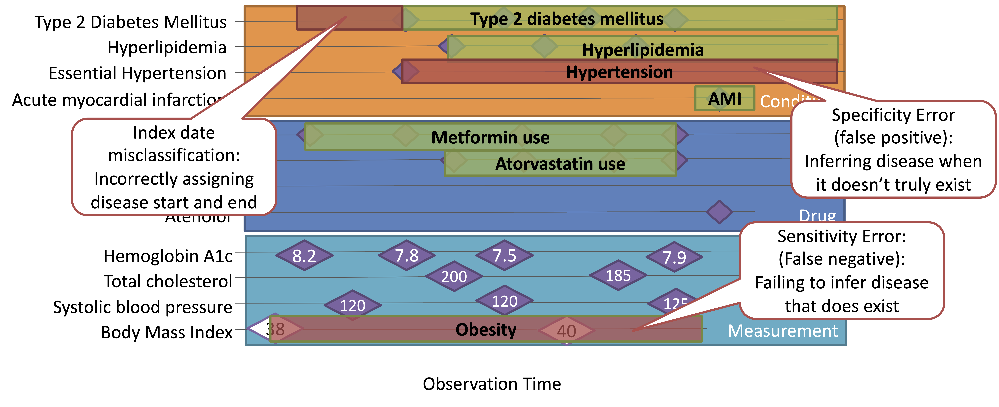
39 Evaluating phenotypes
Objective: estimate the extent to which the inference from the phenotype algorithm consistent with the true health state of the patients?
Measurement error measures:
- Sensitivity, specificity, positive predictive value, negative predictive value
‘A phenotype is fit-for-use’ = the measurement error of the phenotype in the dataset is sufficiently small that it will not negatively impact the interpretation of analysis results
40 Steps for developing and evaluating phenotypes
- Identify the persons who might have the disease
- Aim: Increase sensitivity
- Task: Create inclusive conceptsets used in cohort entry events
- Restrict persons who likely do not have disease
- Aim: Increase specificity / positive predictive value
- Task: Add inclusion criteria
- Determine the start and end dates for each disease episode
- Aim: Reduce index date misspecification
- Task: Set exit strategy, refine entry events and inclusion criteria
41 Dissecting the anatomy of a cohort (phenotype) definition
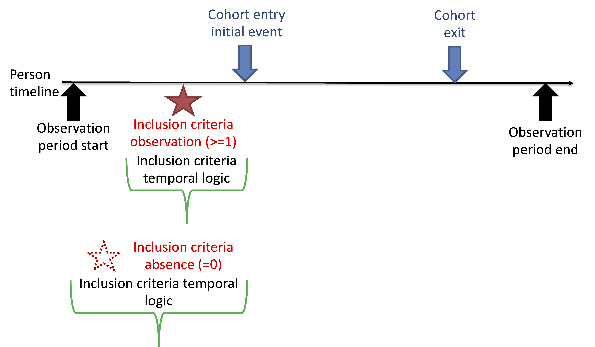
42 Questions to answer when defining a cohort
What event(s) let you enter the cohort?
What inclusion criteria are applied to those events?
For each event, how long do you satisfy the inclusion criteria?
How should events be combined into cohort eras?
43 Dissecting the anatomy of a cohort (phenotype) definition
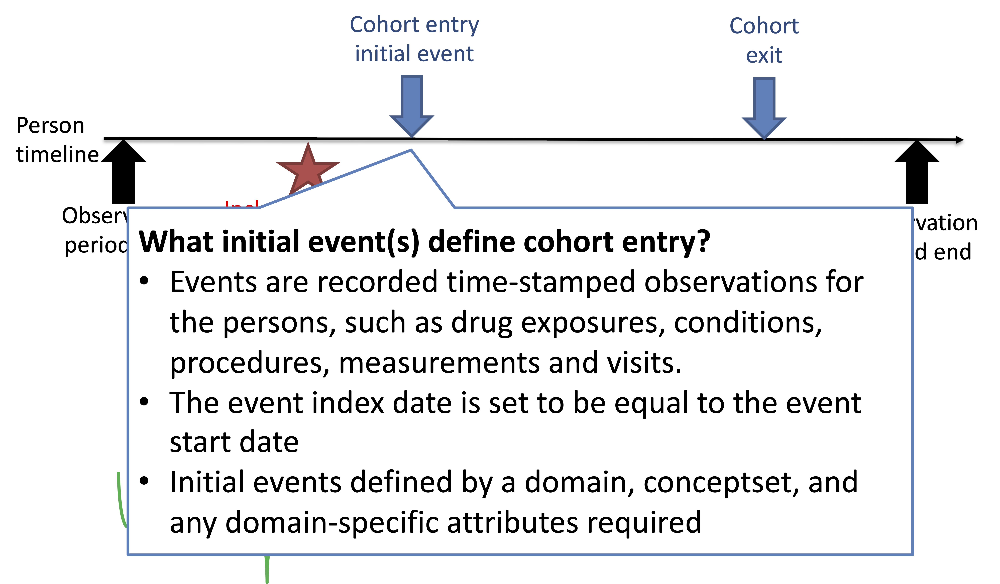
44 What initial event(s) define cohort entry?
- Do:
- Define by existence of any observation in any domain
- Don’t:
- Define by absence of an observation - when does absence occur?
- Define by age - year of birth is constant, but requires index date to anchor age calculation
- Caution:
- Defining a cohort by calendar date can cause observation bias, since that date unlikely to be at point of health service utilization, ex: cases matched to controls. Consider instead defining by a visit that occurs within a calendar timeframe.
45 Dissecting the anatomy of a cohort (phenotype) definition
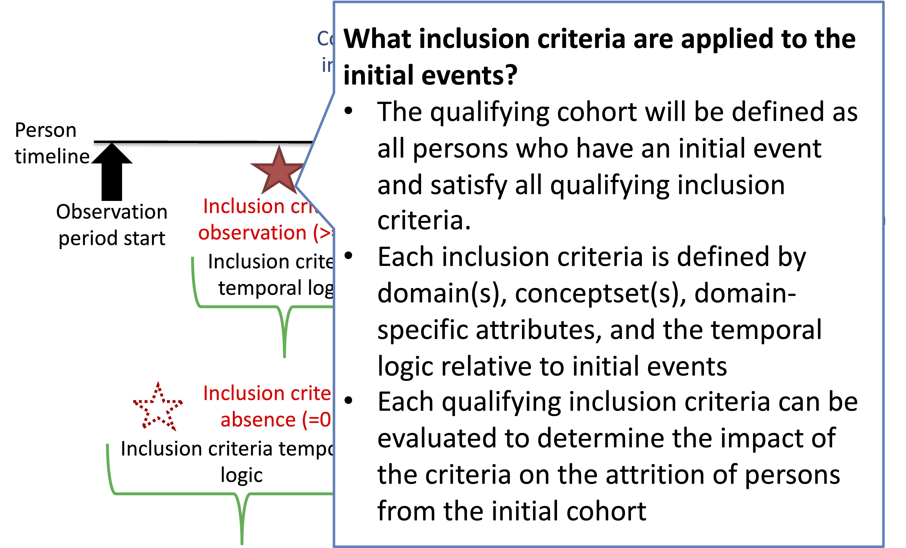
46 What inclusion criteria are applied to the initial events?
- Do:
- Specify all criteria as inclusion criteria to avoid confusion of Boolean logic around inclusion vs. exclusion
- Use information on or before index event (think like a randomized trial: index event is study start, can’t predict future)
- Don’t:
- Assume temporal logic, but always provide relative time window to evaluate criteria
- Caution:
- There’s a difference between “first time in history with >365d prior observation” vs. “no prior observation in last 365 days”
- One person may have multiple initial events, criteria are applied to each event (not person)
47 Dissecting the anatomy of a cohort (phenotype) definition
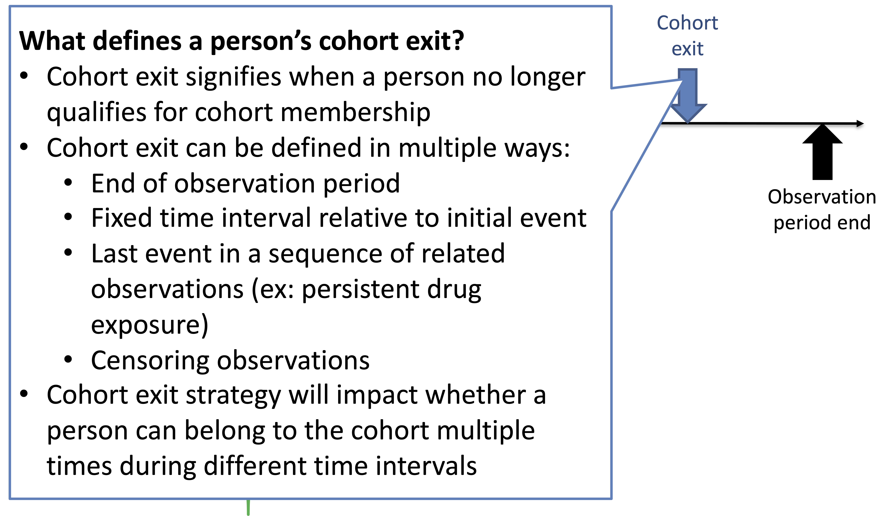
48 What defines a person’s cohort exit?
- Do:
- Specify a cohort exit, even if you are not intending to use it for your analytic use case
- Don’t:
- Confuse censoring for analytical purposes with cohort definition (which can be analysis-independent) ex: censoring at time of outcome
- Caution:
- Time-of-cohort participation can be different from analysis time-at-risk ex: acute effects can be studied using a fixed window post-exposure start, intent-to-treat analysis can follow person through observation period end
49 Deriving all exposure cohorts from base cohorts
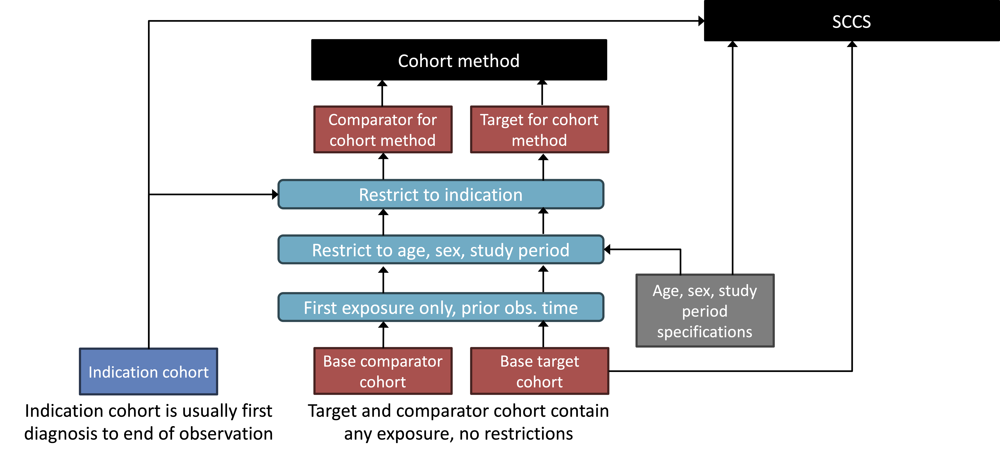
Future-looking, not discussed in class
50 Building cohorts together
Target: GLP1RA exposures
Comparator: DPP4I exposures
Indication: Type 2 diabetes mellitus
Outcome 1: Acute myocardial infarction
Outcome 2: Diarrhea
51 Hands-on examples
- Cohorts in ATLAS
52 Notes for MAS 1
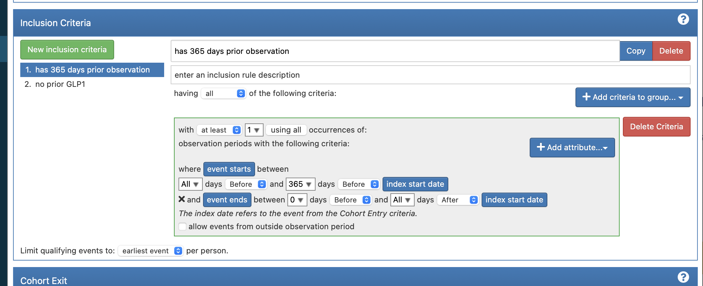
53 Notes for MAS 2
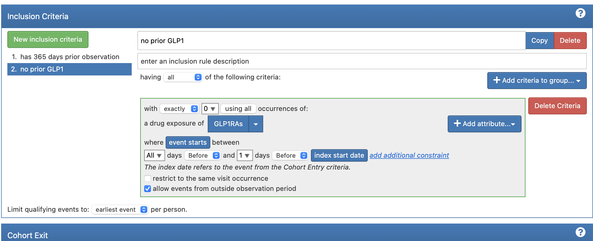